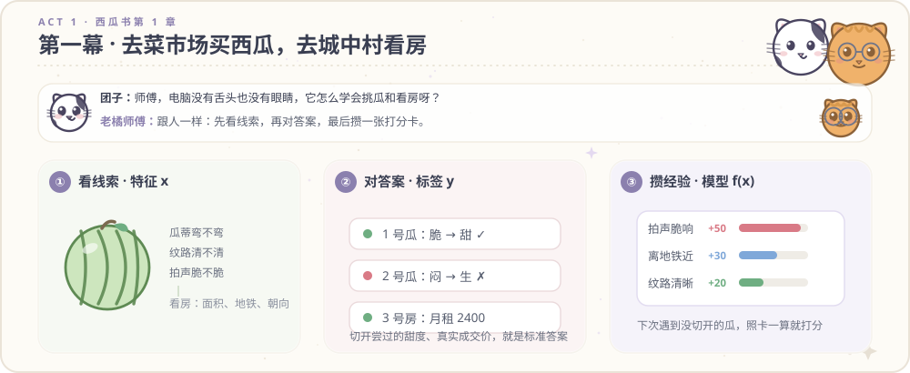

像翻开绘本一样读懂西瓜书与深度学习
左边是手绘故事插图、实验对比图谱与 Matlab R2026a 慢动作分解动画，右边是奶牛猫团子与老橘师傅在屋檐下的一问一答。
小猫团子与老橘师傅的深度学习绘本
用菜场挑西瓜、期末背脏墨点、首富进班、老奶奶折纸剪窗花、马路画双黄线与后厨顺签查咸汤十二桩日常小事，讲透周志华《机器学习》与现代深度学习。

左页插画图板
第 01 页
图注：菜场挑西瓜与毕业租房的特征、标签与打分比重卡。
平方损失均薪
10004.5k
绝对值中位数
5.0k
模拟卷训练误差
0.0876
期末卷测试误差
0.2410
老橘师傅批注：无论队尾转来的首富月薪是一千万还是一亿，站在队伍正中间第 5 号同学的中位数始终停在 5.0 千元。
西瓜书第 1 章与特征工程
第 02 页
第一幕：去菜市场买西瓜与毕业租房
团子
奶牛猫学徒
老橘师傅，我们挑西瓜可以用手拍一拍听声音，去租房子可以用眼睛看采光。可是电脑是一堆芯片，既没有眼睛也没有舌头，它是怎么学会猜西瓜甜不甜、猜一套房子值多少钱的？
老橘师傅
屋檐下的老猫
其实跟你去菜市场买西瓜、毕业租房子做决定的路子一模一样。第一步看线索叫特征 x（瓜皮纹路、离地铁几分钟）；第二步对答案叫标签 y（切开甜不甜、成交房租多少）；第三步攒出打分比重卡就叫模型 f(x)。
屋檐生活比喻笔记
买瓜拍肚皮听脆响、看房量地铁步行时间对应特征提取；旧账本里的甜度与成交价对应监督标签；摸索出的加减分比重卡对应参数化模型。